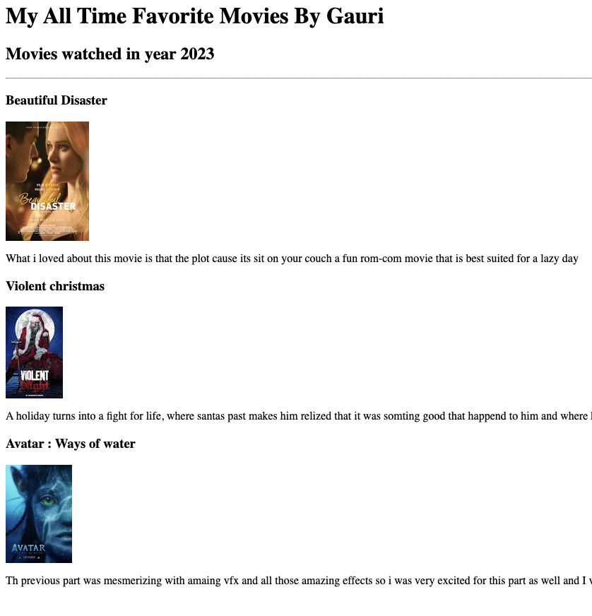

A warm greeting to the visitors!!!
Gauri Patil's Portfolio
Below are the html websits that i have developed:
I am Web-Developer!!
This is the first website i devloped listing my fav movies

Click here to view this web-page
This is the second web page i designed which is a birthday invite
Click here to view this Web-page
About Us
Contact Us